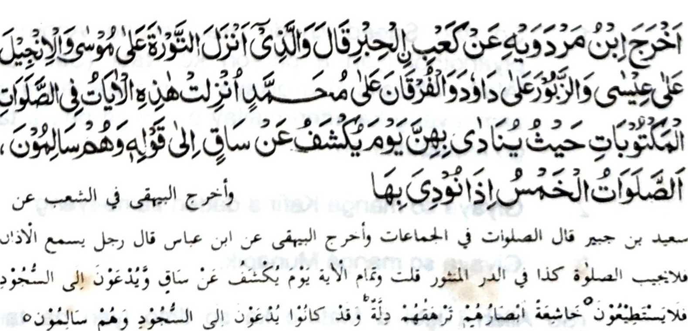
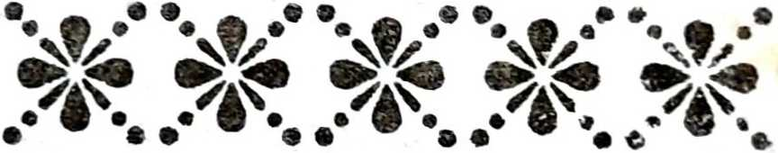

Piyakaliyo o Ibn Mardawie a miyaka thitayan ko Ka'b Al-Hibr a pitharo iyan, "Ibet ko (Allah) Sekaniyan i tomiyoron ko Taurat ko Musa, go so Injeel ko 'Isa, go so Zabur ko Daud go so Furqan ko Mohammad, ka initoron angka-iya manga Ayaat makapantag ko kitindegen ko manga Sambayang a paliyogat si-i ko Masjid a inipananawagun so bang, 'Si-i ko alongan a kasawa-an so butad (Saq), go taway kiran so kasojod, na di ran magaga. Makasesenong so manga kailay ran, a kakokoloban siran sa kahina-an. Na sabenar a siran na ipethawag kiran (ko masa iran sa donya) so Kasojod a siran na kadadaya-an niran.' "[Soorah AI-Qalam:42-43]
So Mala a Bantogan a Saq na isa a mapepento a bantogan a kharinayag ko Gawi-i a Kapangokom So langon o Muslim na palaya phasojod ko kailaya iran non ogaid na aden a saba-ad a so manga likod iran na tanto a thegas sa di ran khagaga o ba siran sojod. Pantag ko antawa-a angkoto a manga tao a da-a okor iran na mbaram-barang a ini-osay ron o manga pananapsir. Miyatharo sangka-iya Hadith, ago miyabager o isa pen a Hadith a piyanothol o Ibn Abbas, a giyoto so manga tao a initalo kiran so Sambayang a Barajoma, na da siran non song.
So saba-ad ko manga tapsir angkanan na kati-i a pagalowin sa baba:
1. So Abu Saeed Khudri (Radhiallaho ’Anho) na piyanothol iyan a pho-on ko Nabi (Sallallaho 'Alaihi Wasallam) a giyaya so manga tao a gi-i zambayang ka aden mailay o manga ped a tao, go kapagasar bo.
2. Giyaya so manga Kafir a daden zambayang
3. Giyaya so manga Munapik.
(So Allah i lebi a Mata-o ka so limo Iyan na taro-top). Tanto a marata a maola-ola so kapakadapanas ago kakowa diyaman ko Gawi-i a Kaphangokom a, si-i ko masa a somosojod so manga Muslim ko kailaya iran ko Bantogan o Allah, na so manga tao a miyagak sa Sambayang a Barajoma na khasalebo a khakilala so diran non kakhagaga-a.
Liyo si-i pen na madakel so manga lalangan a minibegay pantag ko kibagaken ko Barajoma. So kamamata-ani ron na diden kailangan (angka-iya manga lalangan) ko titho a Muslim a sekaniyan na so langon o katharo o Allah ago so Sogo Iyan (Sallallaho 'Alaihi Wasallam) na langon non mala-i kipantag. So peman so tao a di niyan paga-arga-an so manga katharo Iran, na giyangka-iya manga lalangan na daden a bali niyan non. Ogaid na phaka-oma so masa a so omani niyawa na zomariya-an, go ziksa-an ko manga dosa niyan, na apiya pen i kala o kathaobat na diden phakang-gay a gona.
